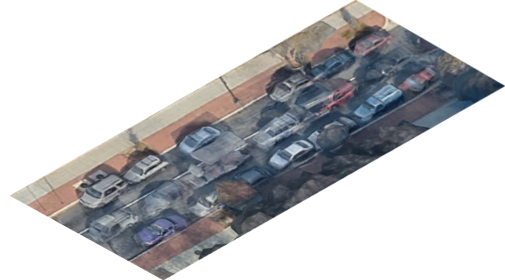
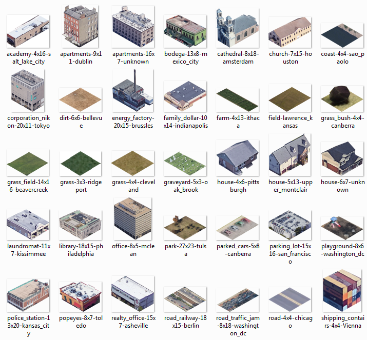
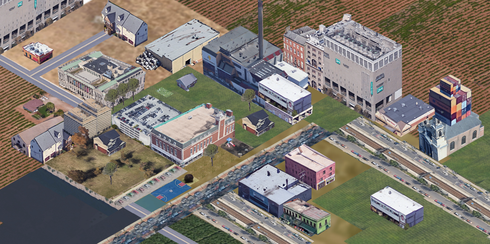
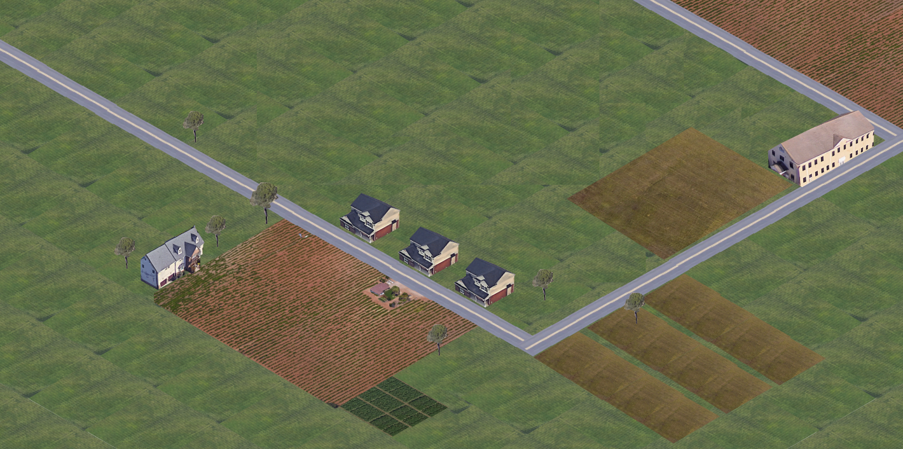
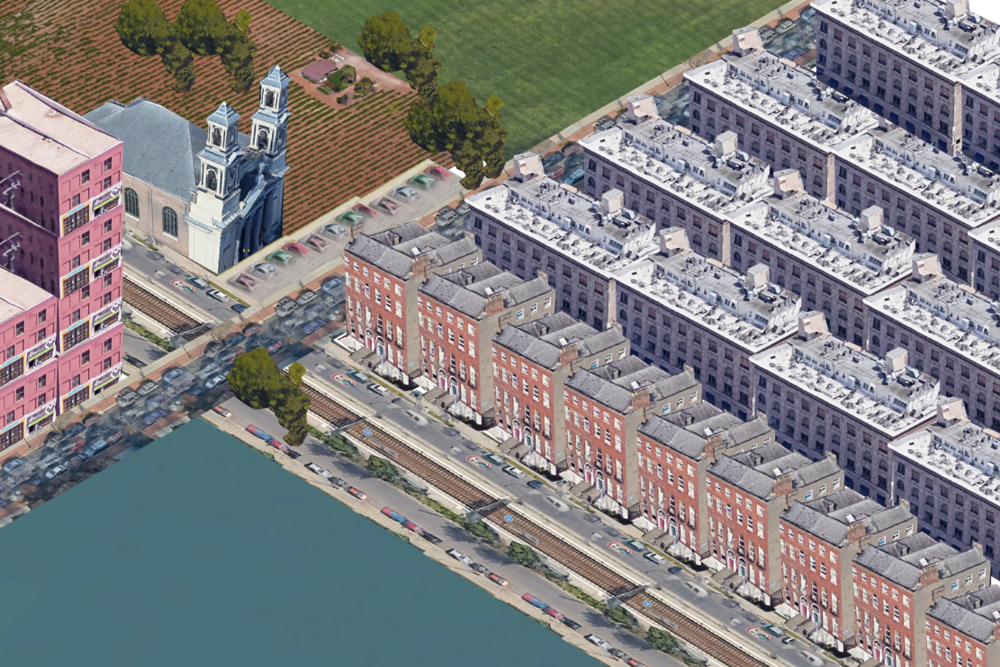

A tile set made from buildings found on Google Earth and altered into a generally isometric perspective.
Click here to download the zip file.

This is an ongoing project, inspired in part by the aesthetics of simcity and in more part by the never ending desire to capture, document, and understand the world. each tileset is labeled with the location its pulled from which allows for an interesting comparison of architecture and living space.


